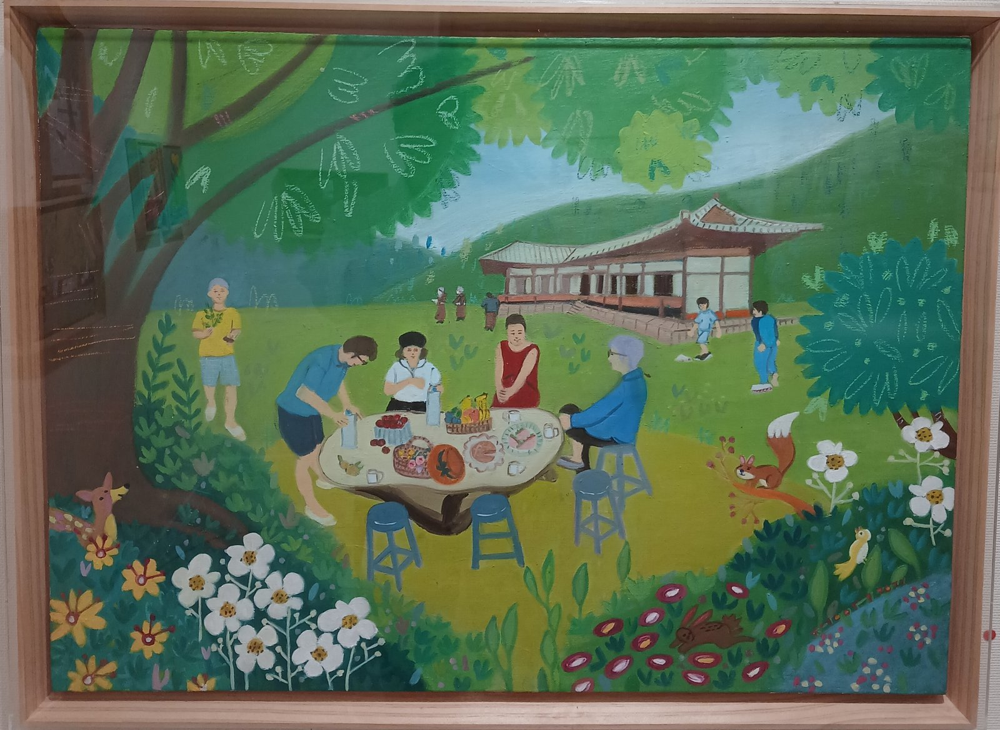

어떤 사랑은 말보다 오래 남습니다.
그림 속에 머물고, 편지 속에 접히고,
오래된 종이와 사진 사이에 조용히 살아 있습니다.
이 책은 송정애의 그림과 기록으로 엮은
작은 기억의 방입니다.
오래된 나무 아래에서 가족은 밥을 먹고,
이야기를 나누고, 계절을 지나왔습니다.
나무는 한 사람의 기억이 되었고,
그 기억은 다시 그림이 되었습니다.
하루를 적는 일은 사라지는 시간을 붙잡는 일이었습니다.
누구에게 보이기 위한 글이 아니라,
마음이 무너지지 않도록 스스로에게 남긴 작은 기도였습니다.
아이들의 글씨는 서툴렀지만,
그 마음은 오래 남았습니다.
종이는 낡아도
그날의 사랑은 아직 선명합니다.